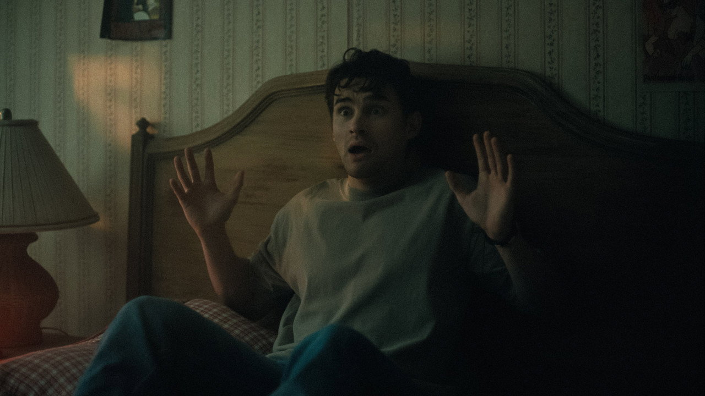
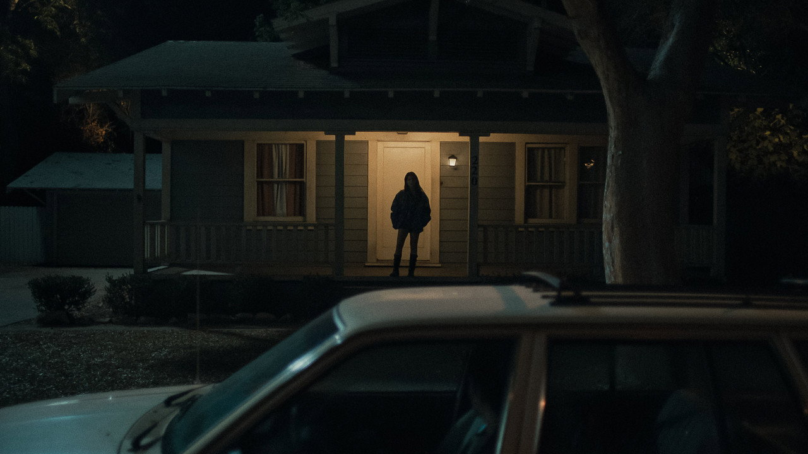
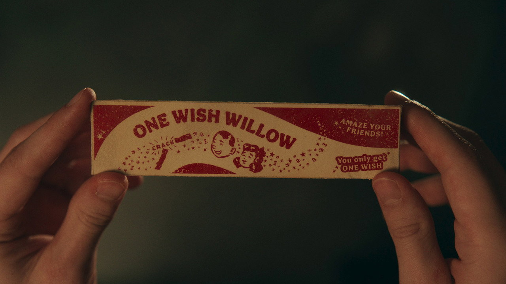
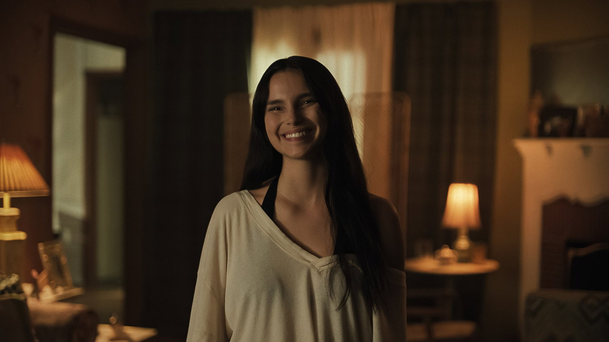
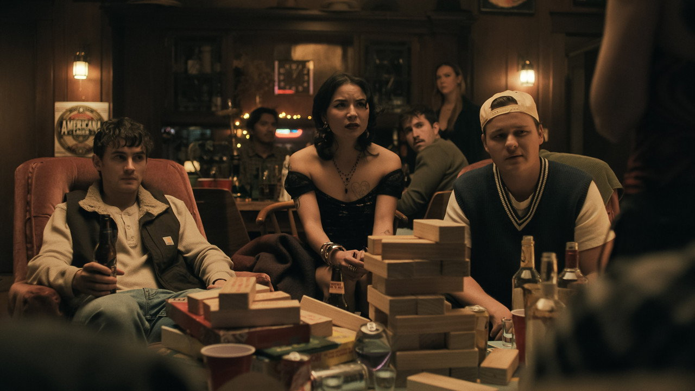

BEAR
MICHAEL JOHNSTON
Dileği tutan çocuk. "Keşke beni sevse"nin, kelimenin tam anlamıyla kabul olduğu andan itibaren tek isteği: dileğini geri almak.
Bear, platonik aşkı Nikki'nin bir gün onu fark etmesini bekleyen, sessiz, iyi kalpli bir çocuk. Sonra eline tuhaf bir şey geçiyor: "Tek Dilek Söğüdü" — kır, dile, kabul olsun. Bear da tam olarak bunu yapıyor.
Ve dileği kabul oluyor. Hem de harfiyen. Nikki artık onu seviyor — ama "seviyor" kelimesinin sözlükteki değil, kâbuslardaki anlamıyla. Film, romantik komedinin bütün sahnelerini (ilk mesaj, tanışma yemeği, eve bırakma) tek tek alıp korku filmine çeviriyor; "keşke o da beni sevse" cümlesinin altında yatan sahiplenme arzusunu seyircinin yüzüne tutuyor.

Efsane basit: söğüt dalını lades kemiği gibi ikiye kır, kırılırken dileğini geçir içinden. Geri alma prosedürü yok. İade kabul edilmez. Küçük yazıyı kimse okumaz.

Filmin en iyi korku aleti bir çığlık değil: bildirim sesi. Aşağıdaki telefon sana ait. Mesajlar gerçek zamanlı düşüyor — sen bu sayfada kaldıkça gelmeye devam edecekler. Dilek tutarsan… daha sık gelirler.
Film boyunca Bear'ın görmezden geldiği işaretler. Liste kendi kendini işaretliyor — çünkü Nikki'ye göre hepsi zaten "normal sevgili davranışı":
Filmin en iyi sahneleri karanlıkta geçiyor: Bear bir şey duyuyor, feneri kaldırıyor ve ışığın gösterdiği kadarını görüyoruz. Aynısı aşağıda. İmlecin fener. Odada yalnız olmayabilirsin.

Dileği tutan çocuk. "Keşke beni sevse"nin, kelimenin tam anlamıyla kabul olduğu andan itibaren tek isteği: dileğini geri almak.

Dileğin kendisi. Gülümsemesi filmin en tatlı ve en korkunç görüntüsü — hangisi olduğu sahneye göre değişir.

Bear'ın arkadaşları; yani Nikki'nin sözlüğündeki karşılığıyla, "aradaki engeller". Bu tanımın nereye gittiğini tahmin edebilirsin.